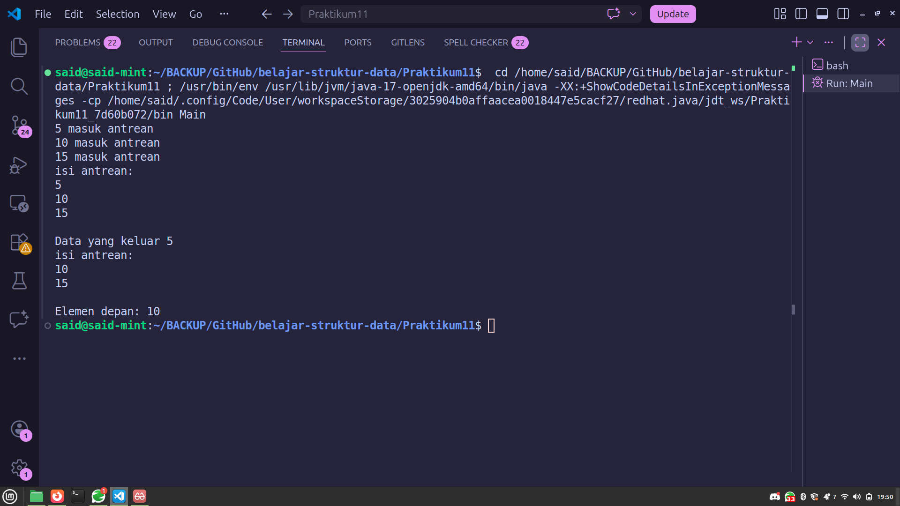
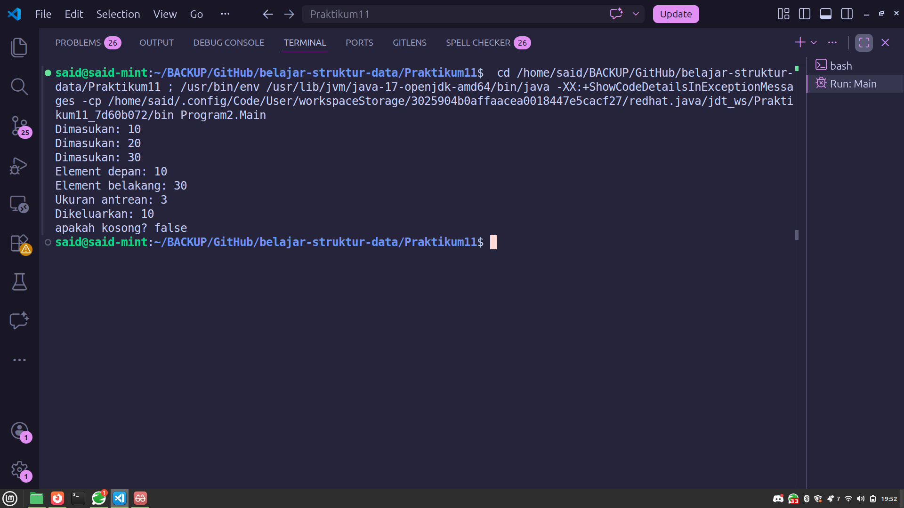
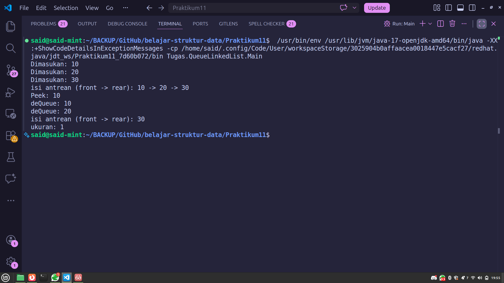

Mata Kuliah: Struktur Data
Nama: Muhammad Said Habibi
NIM: 25030101968
Topik: Queue (Antrean)
Program 1 menggunakan implementasi Linear Queue berbasis array.
public class Queue2{
private int[] arr;
private int rear;
private int capacity;
public Queue2(int size) {
capacity = size;
arr = new int[capacity];
rear = -1;
}
public boolean isFull() {
return rear == capacity - 1;
}
public boolean isEmpty() {
return rear == -1;
}
public void enQueue (int data) {
if (isFull()) {
System.out.println("Antrean penuh");
} else {
arr[++rear] = data;
System.out.println(data + " masuk antrean");
}
}
public int deQueue() {
if(isEmpty()) {
System.out.println("Antrean kosong");
return -1;
}
int frontElement = arr[0];
for (int i = 0; i < rear; i++){
arr[i] = arr[i + 1];
}
rear--;
return frontElement;
}
public int size(){
return rear + 1;
}
public void display() {
if (isEmpty()) {
System.out.println("Antrean kosong");
return;
}
System.out.println("isi antrean: ");
for (int i = 0; i <= rear; i++){
System.out.println(arr[i] + " ");
}
System.out.println();
}
public void peek(){
if (isEmpty()){
System.out.println("Antrean kosong");
}
System.out.println("Elemen depan: "+arr[0]);
}
}public class Main {
public static void main(String[] args) {
Queue2 q = new Queue2(3);
q.enQueue(5);
q.enQueue(10);
q.enQueue(15);
q.display();
System.out.println("Data yang keluar " + q.deQueue());
q.display();
q.peek();
}
}Output Program 1:

Program 2 menggunakan implementasi Circular Queue berbasis array.
package Program2;
public class Queue {
private int[] arr;
private int front;
private int rear;
private int capacity;
private int count;
public Queue(int size) {
arr = new int[size];
capacity = size;
front = 0;
rear = -1;
count = 0;
}
public void enQueue(int data) {
if (isFull()){
System.out.println("Overflow! Antrean");
return;
}
rear = (rear + 1) % capacity;
arr[rear] = data;
count++;
System.out.println("Dimasukan: " + data);
}
public int deQueue(){
if (isEmpty()){
System.out.println("Underflow! antrean kosong");
return -1;
}
int x = arr[front];
front = (front + 1) % capacity;
count--;
return x;
}
public int getFront() {
if (isEmpty()) return -1;
return arr[front];
}
public int getRear () {
if (isEmpty()) return -1;
return arr[rear];
}
public int size() {
return count;
}
public boolean isEmpty(){
return (count == 0);
}
public boolean isFull(){
return (count == capacity);
}
}package Program2;
public class Main {
public static void main(String[] args) {
Queue q = new Queue(5);
q.enQueue(10);
q.enQueue(20);
q.enQueue(30);
System.out.println("Element depan: " + q.getFront());
System.out.println("Element belakang: " + q.getRear());
System.out.println("Ukuran antrean: " + q.size());
System.out.println("Dikeluarkan: " + q.deQueue());
System.out.println("apakah kosong? " + q.isEmpty());
}
}Output Program 2:

| No | Aspek | Program 1 (Linear Queue) | Program 2 (Circular Queue) |
|---|---|---|---|
| 1 | Jenis Queue | Linear Queue | Circular Queue |
| 2 | Variabel penunjuk | Hanya rear | front, rear, dan count |
| 3 | Cara kerja enQueue | arr[++rear] = data | rear = (rear + 1) % capacity |
| 4 | Cara kerja deQueue | Ambil elemen indeks 0, lalu geser seluruh elemen ke kiri | Ambil elemen pada posisi front, lalu majukan front dengan modulo |
| 5 | Kompleksitas deQueue | O(n) — harus geser semua elemen | O(1) — hanya ubah indeks front |
| 6 | Cek isEmpty | rear == -1 | count == 0 |
| 7 | Cek isFull | rear == capacity - 1 | count == capacity |
| 8 | Efisiensi memori | Kurang efisien — ruang di depan array tidak bisa dipakai ulang | Lebih efisien — ruang yang sudah di-dequeue bisa dipakai kembali |
| 9 | Fitur tambahan | peek(), display() | getFront(), getRear() |
1. Mekanisme Dequeue
Pada Program 1, ketika elemen dikeluarkan, seluruh elemen tersisa harus digeser satu posisi ke kiri dengan perulangan. Proses ini memakan waktu O(n). Pada Program 2, dequeue hanya mengubah nilai indeks front menggunakan operasi modulo sehingga hanya memakan waktu O(1).
2. Konsep Sirkular (Modulo)
Program 2 menggunakan operasi modulo (%) untuk membuat array "berputar". Ketika rear atau front mencapai ujung array, ia akan kembali ke indeks 0, sehingga ruang yang sudah kosong bisa dipakai kembali.
3. Pengelolaan Ukuran
Program 1 mengandalkan rear saja untuk mengetahui jumlah elemen. Program 2 menggunakan variabel count yang terpisah karena pada circular queue, rear bisa bernilai lebih kecil dari front.
Kesimpulan: Program 2 (Circular Queue) lebih efisien karena operasi dequeue O(1) dan pemanfaatan memori yang lebih optimal. Program 1 (Linear Queue) lebih sederhana dan cocok untuk pembelajaran dasar.
Berikut adalah implementasi Queue menggunakan Linked List. Berbeda dengan array, Linked List tidak memiliki batasan ukuran tetap dan tidak memerlukan pergeseran elemen saat dequeue.
package Tugas.QueueLinkedList;
public class Node {
int data;
Node next;
public Node(int data){
this.data = data;
this.next = null;
}
}package Tugas.QueueLinkedList;
public class QueueLL {
private Node front;
private Node rear;
private int size;
public QueueLL(){
front = null;
rear = null;
size = 0;
}
public void enQueue(int data){
Node newNode = new Node(data);
if (isEmpty()){
front = newNode;
rear = newNode;
}else{
rear.next = newNode;
rear = newNode;
}
size++;
System.out.println("Dimasukan: " + data);
}
public int deQueue() {
if(isEmpty()){
System.out.println("Underflow! Antrean kosong");
return -1;
}
int removed = front.data;
front = front.next;
if (front == null){
rear = null;
}
size--;
return removed;
}
public int peek(){
if(isEmpty()){
System.out.println("Antrean kosong");
return -1;
}
return front.data;
}
public boolean isEmpty() {
return front == null;
}
public int size() {
return size;
}
public void display(){
if (isEmpty()){
System.out.println("Antrean kosong");
return;
}
System.out.print("isi antrean (front -> rear): ");
Node current = front;
while (current != null) {
System.out.print(current.data);
if (current.next != null) System.out.print(" -> ");
current = current.next;
}
System.out.println();
}
}package Tugas.QueueLinkedList;
public class Main {
public static void main(String[] args) {
QueueLL q = new QueueLL();
q.enQueue(10);
q.enQueue(20);
q.enQueue(30);
q.display();
System.out.println("Peek: " + q.peek());
System.out.println("deQueue: " + q.deQueue());
System.out.println("deQueue: " + q.deQueue());
q.display();
System.out.println("ukuran: " + q.size());
}
}
Setiap elemen dalam queue direpresentasikan sebagai Node yang saling terhubung melalui pointer next.
Operasi enQueue: Buat node baru, jika kosong maka front dan rear menunjuk ke node baru. Jika tidak, sambungkan di belakang rear lalu pindahkan rear ke node baru.
Operasi deQueue: Simpan data dari front, pindahkan front ke node berikutnya. Jika front menjadi null, rear juga di-set null. Node lama otomatis di-garbage collect oleh Java.
| Aspek | Queue Array | Queue Linked List |
|---|---|---|
| Ukuran | Tetap (fixed) | Dinamis (fleksibel) |
| Dequeue | Perlu geser elemen atau modulo | Cukup pindah pointer front — O(1) |
| Memori | Dialokasikan sekaligus di awal | Dialokasikan per node sesuai kebutuhan |
| Overflow | Bisa terjadi jika array penuh | Tidak terjadi selama memori tersedia |
Program ini mensimulasikan sistem antrean pada layanan Genshin Impact Cloud Gaming. Ketika banyak pemain ingin bermain melalui layanan cloud, mereka harus mengantre untuk mendapatkan slot server. Konsep ini sesuai dengan prinsip FIFO (First In, First Out) pada Queue.
package Tugas.QueueGenshinImpactCloud;
public class GenshinCloudQueue {
private String[] queue;
private int rear;
private int capacity;
public GenshinCloudQueue(int size) {
this.capacity = size;
this.queue = new String[capacity];
this.rear = -1;
}
public boolean isFull() {
return rear == capacity - 1;
}
public boolean isEmpty() {
return rear == -1;
}
public void enqueue(String playerName) {
if (isFull()) {
System.out.println("\n[!] Antrean Penuh! Server sedang sibuk.");
} else {
queue[++rear] = playerName;
System.out.println("\n[+] " + playerName
+ " telah masuk ke dalam antrean.");
System.out.println("Posisi saat ini: " + (rear + 1));
}
}
public String dequeue() {
if (isEmpty()) {
System.out.println("\n[!] Antrean Kosong.");
return null;
}
String playingPlayer = queue[0];
for (int i = 0; i < rear; i++) {
queue[i] = queue[i + 1];
}
rear--;
System.out.println("\n[>>] " + playingPlayer
+ " sekarang bisa mulai bermain!");
return playingPlayer;
}
public void displayQueue() {
if (isEmpty()) {
System.out.println("\n[i] Antrean saat ini kosong.");
return;
}
System.out.println(
"\n--- DAFTAR ANTREAN GENSHIN CLOUD ---");
for (int i = 0; i <= rear; i++) {
System.out.println((i + 1) + ". " + queue[i]);
}
System.out.println(
"------------------------------------");
}
public int getQueueCount() {
return rear + 1;
}
public String peekNext() {
if (isEmpty()) return "Kosong";
return queue[0];
}
}package Tugas.QueueGenshinImpactCloud;
public class MainApp {
public static void main(String[] args) {
GenshinCloudQueue cloudQueue =
new GenshinCloudQueue(10);
System.out.println("========================");
System.out.println(" SIMULASI ANTREAN GENSHIN");
System.out.println("========================");
System.out.println(
"\n--- Menambahkan Pemain ---");
cloudQueue.enqueue("Traveler_Lumine");
cloudQueue.enqueue("Diluc_Master");
cloudQueue.enqueue("Paimon_EmergencyFood");
cloudQueue.enqueue("Zhongli_GeoDaddy");
cloudQueue.enqueue("Raiden_Ei");
cloudQueue.displayQueue();
System.out.println(
"\n--- Memproses Antrean ---");
cloudQueue.dequeue();
cloudQueue.dequeue();
System.out.println("Pemain berikutnya: "
+ cloudQueue.peekNext());
System.out.println("Total menunggu: "
+ cloudQueue.getQueueCount());
cloudQueue.displayQueue();
System.out.println("\nSimulasi selesai.");
}
}========================================
SIMULASI ANTREAN GENSHIN CLOUD
========================================
--- Menambahkan Pemain ke Antrean ---
[+] Traveler_Lumine telah masuk ke dalam antrean.
Posisi saat ini: 1
[+] Diluc_Master telah masuk ke dalam antrean.
Posisi saat ini: 2
[+] Paimon_EmergencyFood telah masuk ke dalam antrean.
Posisi saat ini: 3
[+] Zhongli_GeoDaddy telah masuk ke dalam antrean.
Posisi saat ini: 4
[+] Raiden_Ei telah masuk ke dalam antrean.
Posisi saat ini: 5
--- DAFTAR ANTREAN GENSHIN CLOUD ---
1. Traveler_Lumine
2. Diluc_Master
3. Paimon_EmergencyFood
4. Zhongli_GeoDaddy
5. Raiden_Ei
------------------------------------
--- Memproses Antrean (Mulai Bermain) ---
[>>] Traveler_Lumine sekarang bisa mulai bermain!
[>>] Diluc_Master sekarang bisa mulai bermain!
Pemain berikutnya: Paimon_EmergencyFood
Total menunggu: 3
--- DAFTAR ANTREAN GENSHIN CLOUD ---
1. Paimon_EmergencyFood
2. Zhongli_GeoDaddy
3. Raiden_Ei
------------------------------------
Simulasi selesai.| Konsep Queue | Penerapan di Genshin Cloud |
|---|---|
| FIFO | Pemain yang pertama masuk antrean akan pertama mendapat akses bermain |
| Enqueue | Pemain bergabung ke antrean cloud gaming |
| Dequeue | Pemain di posisi depan mendapat giliran bermain |
| Peek | Melihat siapa pemain selanjutnya yang akan bermain |
| isFull | Server sudah penuh, tidak bisa menampung pemain lagi |
| isEmpty | Tidak ada pemain yang mengantre |
Queue cocok untuk kasus ini karena layanan cloud gaming memiliki keterbatasan server, dan pemain yang sudah menunggu lebih lama harus mendapat giliran lebih dahulu (prinsip keadilan FIFO).